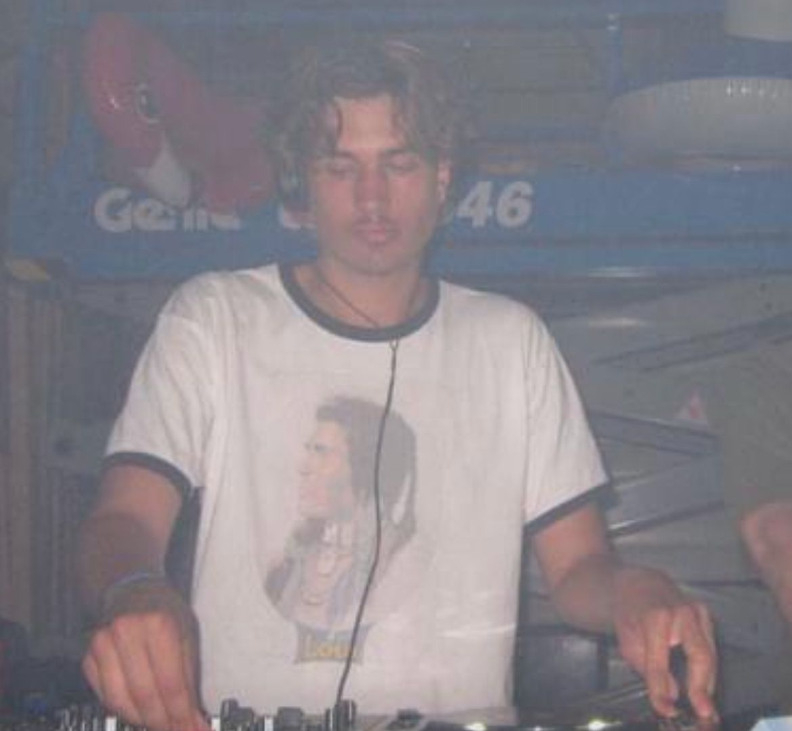
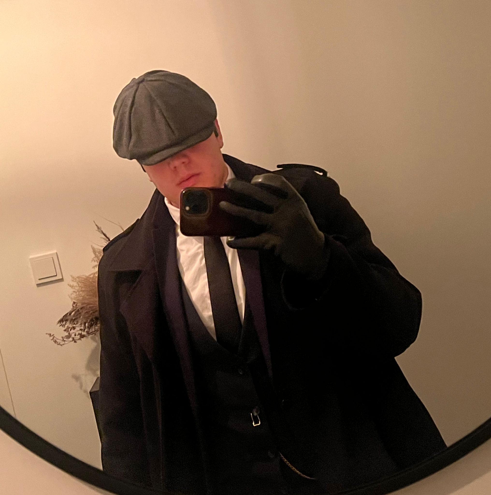

Dex van Kesteren

Dex is our resident DJ and techno enthusiast. In addition to his love for mixing, he
knows everything about the structure of electronic tracks and the energy of a great beat. His
fresh perspective ensures the podcast always grooves and surprises.
Ronald

Ronald is a true music enthusiast with a love for rock and country. Whether it’s the
gritty riffs of classic rock or the stories hidden in a country song, Ronald captivates you with
his passion. He brings structure and creativity to our podcast, ensuring that every story is
told in just the right tone.
Senuk
Born and raised in Sri Lanka, Senuk brings a touch of international flair to the
podcast. He's passionate about R&B and indie music and always knows exactly how these genres can
move people. With his calm voice and sharp insights, he guides you through the story behind the
music.